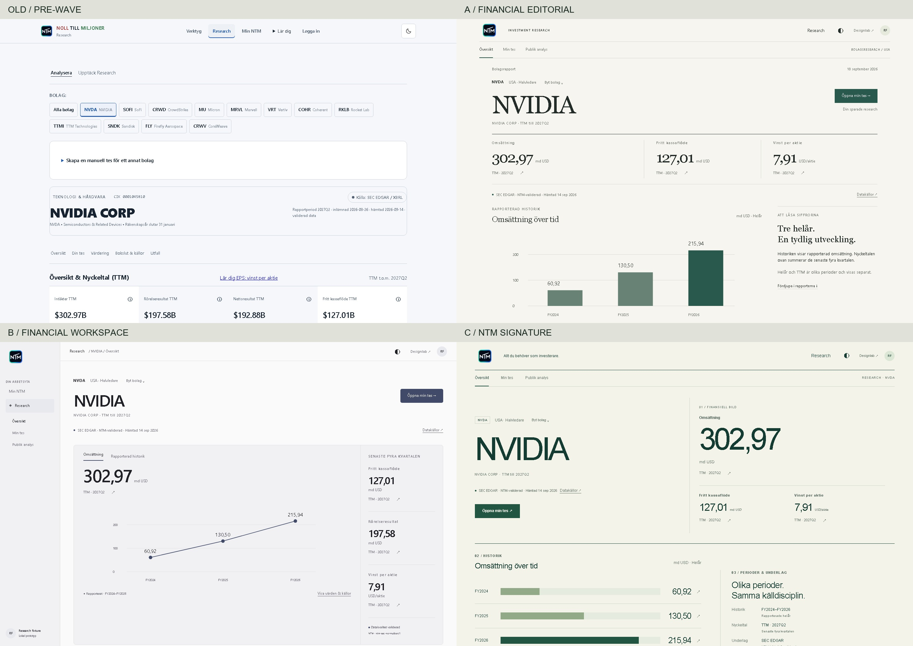
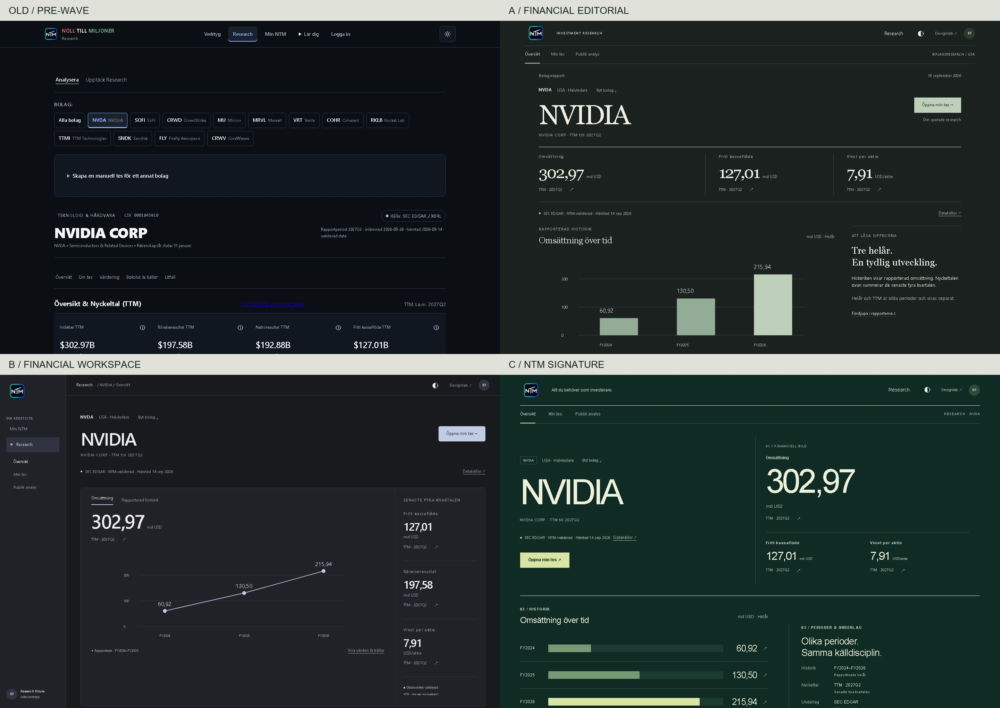

Financial Editorial · Financial Workspace · NTM Signature. Jämför identitet, läsning och arbetsflöde med samma NVIDIA-data. Ingen riktning är vald.
Öppna min tes, redigera text, granska, öppna källor och finansiella rapporter. Allt är förifyllt. Redigering gäller bara den öppna förhandsvisningen och återställs vid omladdning. Ingen inloggning, lagring eller synkning används. Bolagsväljaren är avgränsad till NVIDIA för en jämförbar studie.
Desktop visas nedskalad här om fönstret är smalare än 1440 px. Använd ”Öppna i egen flik” för full storlek. Mobil har en riktig 390 × 844-viewport. Sida vid sida kan skrollas horisontellt.
Datagrund: lokal NVDA.json, SEC EDGAR, hämtad 14 september 2026. TTM till 2027Q2; omsättningshistorik FY2024–FY2026. Författare och texter är tidigare Wave 1A-fixtures.
Samma NVIDIA-data, desktop 1440 × 960. Äldre sidan har sin ursprungliga skrollposition och informationsordning. Öppna bilden för full upplösning.

